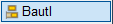
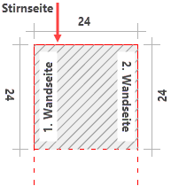

")
")
1.Wandende definieren
§Klicken Sie die Stirnseite der Wand an. Die Stirnseite muss an den Wandseiten anliegen. [Stirnseite Wand].
§Klicken Sie zwei Wandseiten an. Das zweimalige Anklicken derselben Wandseite ist nicht möglich. [1./2. Wandseite].
§Wenn Sie die Option Rand Öffnung gewählt haben, klicken Sie die Wandseite an, an der keine Dübelleisten verlegt werden sollen. [Rand Öffnung].
 |
Verlegebereich Der Verlegebereich ergibt sich aus der Breite der Stirnseite (zum Beispiel: b=240 mm). Die Dübelleisten werden auf diesem Maß verteilt. |
2.Dübelleisten verlegen
§Geben Sie im Dialog Verlegeparameter Wandende die Anzahl der Dübelleisten, die Abstände und weitere Angaben an. Alle Eingaben sind sofort sichtbar.
Anzahl Geben Sie an, wie viele Dübelleisten an der Stirnwand und den Wandseiten verlegt werden sollen. Das Ergebnis ist sofort sichtbar. Eckabstand 1 Geben Sie den Abstand der Dübelleiste zu dem markierten Eckpunkt an. Eckabstand 2 Geben Sie den Abstand der Dübelleiste zu dem markierten ( Zwischenabstand Der Zwischenabstand der Dübelleisten an den Wandseiten dient nur der Anzeige. Aktualisieren Sie die Anzeige nach der Eingabe des Eckabstands, indem Sie in das Eingabefeld klicken. Ecke(n) Anzahl Geben Sie die Anzahl der Dübelleisten an den Wandecken an. Angewandte Dübelleiste ändern Sie können die Dübelleistendefinition ändern. Klicken Sie auf Ändern, um den Dialog Eigenschaften Dübelleisten zu öffnen. Geben Sie im Dialog die neuen Parameter an und bestätigen Sie mit Ok. Der gewählte Dübelleistentyp wird im Bereich Angewandte Dübelleiste angezeigt. |
 markiert.
markiert.§Bestätigen Sie die Verlegung mit OK.
Der Dialog Auswahl Bauteiltyp und Randbedingung wird geöffnet. Sie können weitere Dübelleisten verlegen oder den Dialog mit Abbrechen schließen.
Zugehörige Aufgaben:
·Dübelleiste im Schnitt verlegen
Zugehörige Referenzen: